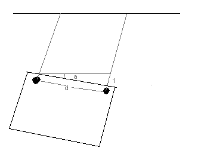

Discussion
This section discusses some of our outstanding issues, and future development plans.
Motor Deadzone
Two future improvements were noticed during motor characterization - arduino reduces "analog" (PWM) fidelity to 8-bit at 500Hz, and the motors have unique dead zones. The motors and fans will begin turning once a certain threshold PWM is reached to overcome motor 'stickiness' and inertia. Experimentally we found our motors begin turning at a duty cycle of around 160/255 at a frequency of 32kHz. We recommend using the Arduino map function to take the input motor command (between 1 and 99) and map it to a PWM duty cycle between the minimum threshold and 255. This abstraction will take place on the Mega, so the existing communications will remain the same. This will also simplify the automatic control loop.
The arduino function analogWrite takes a value between 0 and 255, which represents an 8-bit timer operating at 500Hz. On the Seeeduino Mega, we are capable of operating a 16-bit timer at 32kHz. Therefore we will replace the analogWrite function and map our 1-99 motor command to a 16-bit duty cycle.
Autopilot
The control loop for autopilot was not finished for the deadline of project 1. However, almost everything was implemented with the exception of the motor deadzone. Since autonomous control was not a priority for projects 1 or 2, a simple proportional controller would have been implemented. It would run at a defined time interval probably somewhere between 1 and 10 Hz. The faster loop would respond better in theory, but is also more difficult to model because time delays from receiving wireless packets or receiving UART packets could add nonlinearities in the system. Another issue is the sonar resolution. They are limited to 1 inch and this sets an angular resloution on wall following. The image below explains that the angular reslution 'a' and is calculated by arctan(1/d) where 'd' is seperation distance in inches. In our platform, 'd' is 10 inches, so the angular reslution is 5.7 degrees. This should be improved or at least considered in future projects.
The control algorithm is an exciting aspect of the project for us. A model for the hovercraft will be instrumented in Project 2, and an optimized controller will be designed using MATLAB/Simulink in Project 3.